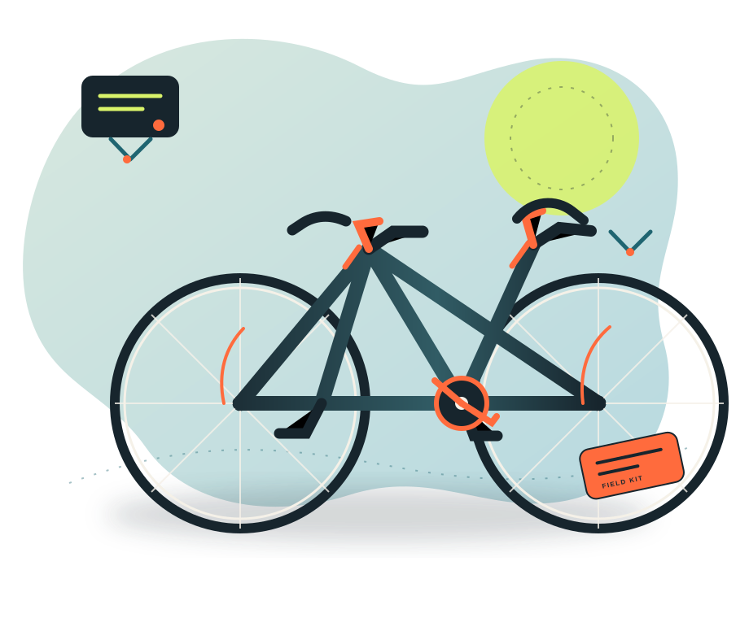

01 / QUICK LOOK
The
Once-Over
A clear picture of what's working, what's wearing and what needs attention next.
£29↗
THE WORKSHOP, WHERE YOU ARE
Careful bicycle servicing, without the trip across town. We bring the workshop to your driveway, workplace or chosen meeting point.

Your bike should make the day feel bigger, not your to-do list.
From the commuter that needs a quiet drivetrain to the weekend bike ready for a bigger route, we make the practical bits feel straightforward. Tell us what you ride and what feels off. We'll help you choose the right level of care.
Meet the way we workPICK YOUR PIT STOP
Start with what your bike needs today. If you're not sure, we'll help you work it out before anything is booked.
A clear picture of what's working, what's wearing and what needs attention next.
The regular reset: gears, brakes, drivetrain, tyres and the little details.
A more considered clean, inspection and setup for a bike that needs extra time.
A WORKSHOP WITH WHEELS
Choose a spot that works: outside your home, at the office or another agreed location. We'll confirm the visit area and what we can complete on-site before you commit.
Good maintenance isn't about making a bike perfect. It's about making the next ride feel right.
THE SPOKE & SIGNAL WAY — A FICTIONAL BRAND PRINCIPLE
FROM THE STREET
These are illustrative customer stories written for this fictional concept, not real testimonials.
“I could leave the bike at home, get on with the morning and have a clear list of what needed doing.”
“The useful part was knowing what could wait and what shouldn't. No mystery, no pressure.”
GOOD TO KNOW
Not sure whether a mobile visit is right for your bike? Start here.
How the visit worksWe carry a selection of common consumables, but availability depends on the bike and component. We confirm any parts cost before fitting or ordering.
This concept offers mechanical checks and compatible mechanical repairs only. Battery, motor, firmware and electronic fault diagnostics are outside the stated scope.
We explain the finding and provide an updated estimate. Additional work is not started without customer approval.
The concept focuses on Bristol and nearby neighbourhoods. Enter your postcode on the request page and treat the response as a coverage enquiry, not an instant confirmation.